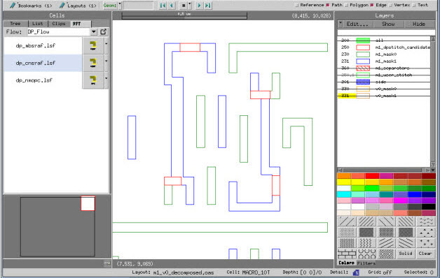
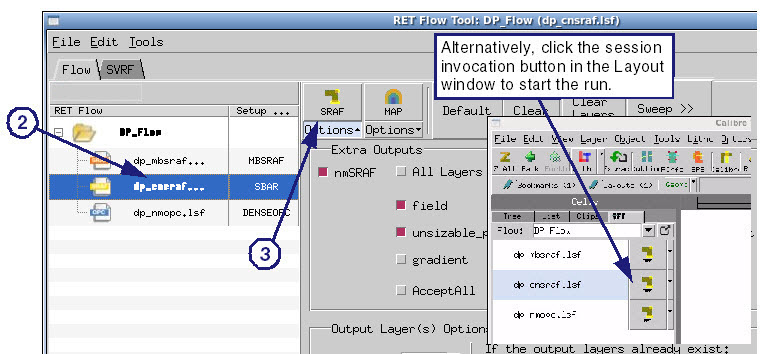
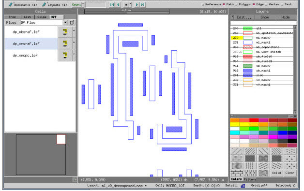

This procedure
explores the steps for executing Calibre nmSRAF for dimensional-
and model-based SRAF generation (cnsraf and mbsraf, respectively)
on a double-patterning design.
Procedure
- Zoom in to the area of the
layout you want to run Calibre nmSRAF on.
Figure 1. Zoom in to an Area
of the Layout
- In the RET Flow Tool, select
the session you want to run.
- Press the SRAF button (or alternatively
click the associated button of the session you want to run in the
Layout window) as demonstrated in the following figure.
The session begins running.
Figure 2. Start a Calibre nmSRAF
Session
When the session finishes,
SRAFs are placed in the area of the design you zoomed into.
Figure 3. SRAF Applied to Design
Area
Results
You have executed Calibre nmSRAF within
the RET Flow Tool and generated SRAFs on an area of the layout.